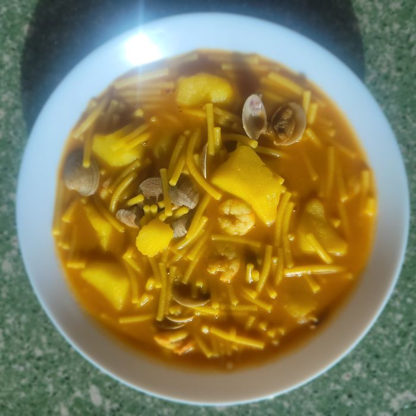

Cazuela de fideos
Descripción
La cazuela de fideos es uno de los tipos de cazuela de la cocina tradicional malagueña, muy típico en zonas del Guadalhorce de Pizarra y Coín.
Desde el punto de vista nutricional, es un plato equilibrado:
- Fideos: aportan carbohidratos complejos, fuente de energía.
- Mariscos y pescado: ricos en proteínas de alta calidad, bajos en grasa, aportan yodo, hierro, fósforo, omega-3 y vitaminas del grupo B (especialmente B12 y niacina).
- Verduras (pimiento, tomate, cebolla, alcachofa): proporcionan fibra, vitamina C, ácido fólico, potasio y antioxidantes.
- Aceite de oliva y ajo: grasas saludables con propiedades antiinflamatorias y cardioprotectoras.
Ingredientes
- Gamba blanca
- ¼ de almejas
- Boquerones limpios sin espinas (opcional) ¼ aprox.
- alcachofas (opcional)
- 1 tomate
- 2 pimientos
- Media cebolla mediana
- Azafrán
- 1 cucharadita de pimiento molido
- Laurel
- 3 patatas medianas
- Unos 250 gr.Fideos medianos
- Aceite, unos 50ml (Los fideos necesitan menos aceite que el arroz)
- Sal
- Unos 2 l. de agua
Pasos
- Dejamos las almejas, unos 20 minutos en un recipiente con agua y sal para que suelten la arena.
- En una cacerola ponemos a hervir el agua y las cabezas de las gambas.
- Añadimos un poco de aceite a la cacerola y hacemos el sofrito (tomate, pimiento, cebolla).
- Después, un poco antes de apartarlo y a fuego más bajo, se le añade el pimiento molido, dejamos sofriendo sobre 1 minuto.
- Trituramos el sofrito y vertemos nuevamente a la cacerola.
- Enjuagamos las almejas (que ya habrán soltado la arena) y las moreamos un poco, junto con el sofrito ya triturado, hasta que se abran, añadir las alcachofas y el laurel. Mantener unos minutos hirviendo.
- Colar el agua de las gambas y añadir a la cacerola junto al sofrito y las almejas y ponemos a hervir.
- Cuando esté hirviendo todo añadir las patatas troceadas (chascadas) y el azafrán. En unos 5 ó 10 minutos añadir los fideos y mantener unos 12 minutos más o el tiempo que indique el fabricante.
- Unos 5 minutos antes de apagar el fuego echar las gambas peladas y los boquerones.
Pasos (Thermomix)
- Dejamos las almejas, unos 20 minutos en un recipiente con agua y sal para que suelten la arena.
- Añadimos en thermomix la verdura (tomate, pimientos, cebolla) para hacer el frito, 7-10 minutos, varoma, velocidad 2.
- Agregar el pimiento molido 1 minuto, 90°, velocidad 2.
- Cuando haya bajado la temperatura triturar 1:30 minuto, velocidad progresiva 5-10.
- Agregamos este frito a una cacerola junto a las almejas enjuagadas. Las moreamos un poco con el frito hasta que se abran, añadir las alcachofas y el laurel. Mantener unos minutos hirviendo.
- Mientras tanto en thermomix hemos añadido el agua y las cabezas de las gambas, unos 12 minutos, varoma, velocidad 2. O lo ponemos a hervir en una olla.
- A continuación colamos el agua y la echamos a la cacerola junto al frito y las almejas y ponemos a hervir.
- Cuando esté hirviendo todo añadir las patatas cortadas en cachos y el azafrán. En unos 5 ó 10 minutos añadir los fideos y mantener unos 12 minutos más o el tiempo que indique el fabricante.
- Unos 5 minutos antes de apagar el fuego echar las gambas peladas y los boquerones.